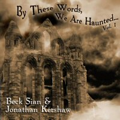
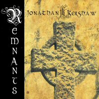
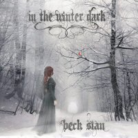
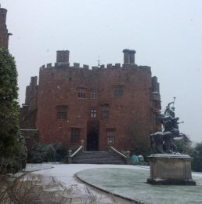

Latest News
26-03-15 BY THESE WORDS WE ARE HAUNTED VOL.1
|
AVAILABLE FROM 31st MARCH 2015 This new release from Beck Sian & Jonathan Kershaw is an atmospheric collection of some of Beck's favourite ghost poems from various writer's of the 19th and 20th century. A combination of music and spoken word performances from both Beck and Jonathan brings these haunting words (by the likes of Charlotte Bronte, Thomas Hardy and Henry Longfellow) to life and provides a chilling, late night companion. |
 | |||
| "By These Words, We Are Haunted...Vol.1 is
the first in a series of download releases coming this year
that celebrate some of the great poets of the last two
hundred years. Please note that this album is available as a
download only and can be purchased through our
DOWNLOAD page* or from
iTunes,
Amazon and all top online music sources. *Mac users: due to complications on the host site for our download page, we recommend using iTunes or Amazon. |
||||
| Purchase "By These Words, We Are Haunted....Vol.1" now from: | ||
02-12-14 NEW RELEASES AVAILABLE NOW
| New releases are now available from both Jonathan Kershaw and Beck Sian: | |
|  | This album delivers the traditional Celtic side of
Jonathan Kershaw's repertoire. Simply inspired by
requests for recordings of these pieces used during live
performances they are collated here on one CD. All the
pieces are arranged for solo acoustic guitar (although
several pieces actually use twin guitars to enhance the
sound) and provide an entwining web of fleet melody
lines and bouncing bass line movements. The Special
edition CD also includes a bonus track featuring Beck
Sian. Available from our online Store. |
|  | Featuring 12 ghostly, gothic-folk songs in celebration
of the cold and icy months of the year, this is Beck
Siàn's most atmospheric work yet. A collection of icy
ghost stories - old and new - and a celebration of the
frosty, snowy landscapes of Winter. A little bit gothic,
a little bit folky, a little bit weird - but you would
expect that from Beck by now! "In the Winter Dark" is now available to pre-order from our online Store including a limited edition deluxe pack |
27-10-14 PRE-ORDER "IN THE WINTER DARK" BY BECK SIAN
|
Featuring 12 ghostly, gothic-folk songs in celebration
of the cold and icy months of the year, this is Beck
Siàn's most atmospheric work yet. A collection of icy
ghost stories - old and new - and a celebration of the
frosty, snowy landscapes of Winter. A little bit gothic,
a little bit folky, a little bit weird - but you would
expect that from Beck by now! "In the Winter Dark" is now available to pre-order from our online Store including a limited edition deluxe pack |
|
30-07-14 OFFICIAL VIDEO RELEASE
|
The official video for Jonathan's bombastic track "Crossing
the Third Sea" from his album "Bizarre Tales" has now been
made available to view on Youtube. |
03-06-14 "LEGENDS OF CAMELOT" BY ZAEEM JAMAL
|
We are very excited to announce that there is a
collaboration afoot with Fashion Designer Zaeem Jamal, and
his current collection 'The Legends of Camelot'. Beck Sian
and Jonathan Kershaw recently visited the Zaeem Jamal
emporium in London to discuss future collaborative projects.
More news soon! www.zaeemjamal.com |
|
26-01-14 A HAUNTED EVENING AT POWIS CASTLE
| Beck & Jonathan will be performing at a special evening
of music and wine in the majestic surroundings of Powis
Castle, Powys, Wales on 15th March 2014. Tickets can be purchased in advance by contacting Ruth Scutter at Powis Castle at a cost of £9 each. |
|
| This will be a wonderful evening of Jonathan's powerful and delicate guitar work and the ethereal and haunting voice and music of Beck within the "Lady Henrietta's restaurant" at the Castle. Wine will be available throughout the evening so please come along to enjoy this special event. |  |
06-11-13 WAVE GOTIK TREFFEN 2014
We are thrilled to announce that the Wave Gotik Treffen Festival in Leipzig, Germany has been added to the Beautiful Ghosts & Bizarre Tales tour 2014. Wave Gotik Treffen is the world's largest goth festival and we're really excited to be invited to join the line up.
12-10-13 New dates announced for Beautiful Ghosts & Bizarre Tales Tour
More dates are being added to the Beautiful Ghosts & Bizarre Tales tour. New dates in Lancashire and Sussex are being added - see the Live page for more details. Also, keep an eye out here for a special announcement very soon...
28-08-13 Exciting news about Festival performances next year
We're hoping very shortly to confirm some very exciting news with regards festivals Beck and Jonathan will be playing at in 2014.....watch this space!
01-07-13 New dates announced for Beautiful Ghosts & Bizarre Tales Tour
New dates in Yorkshire and Wales have been added to the tour. Please see the Live page for more details.
28-05-13 Beautiful Ghosts & Bizarre Tales tour announced!
Joint tour announced between Australian singer Beck Siàn and acclaimed UK guitarist Jonathan Kershaw